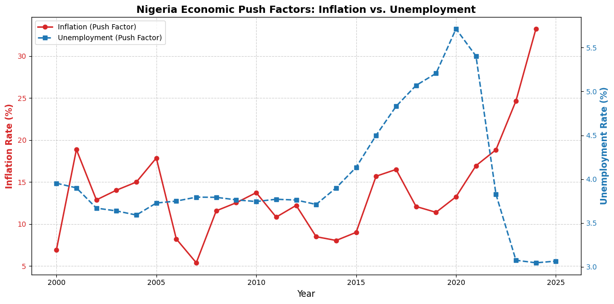
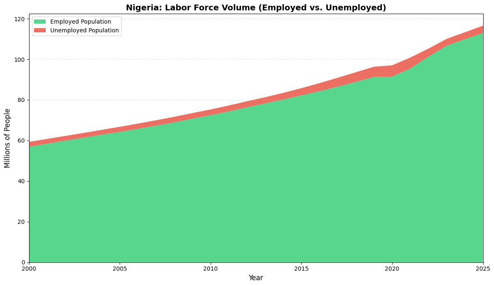
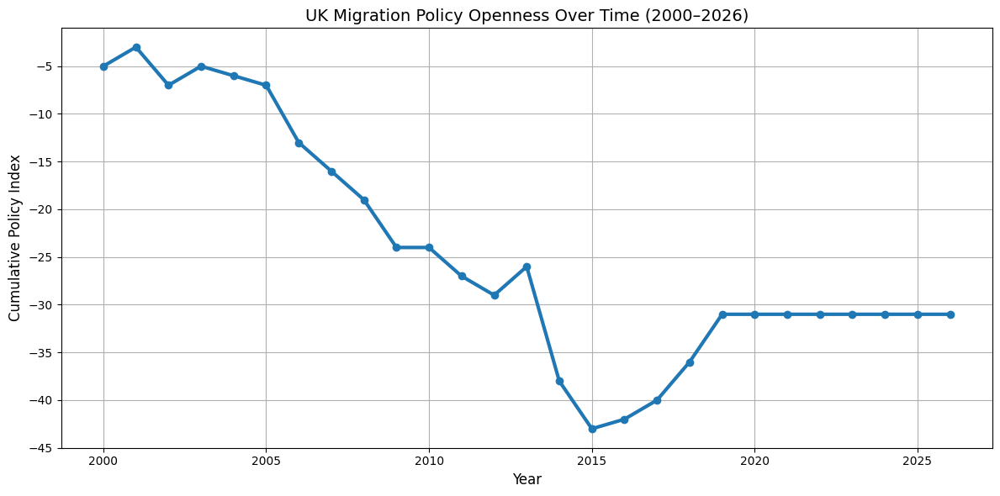
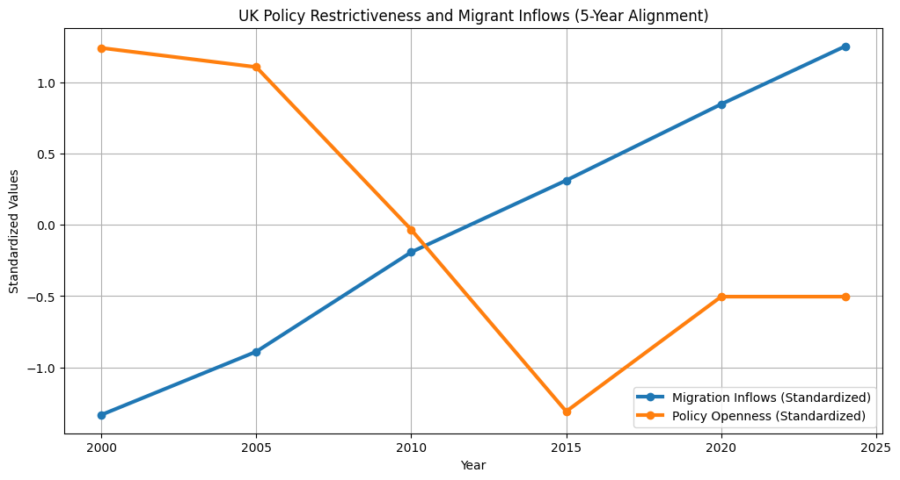

MIGRATION OF NIGERIAN HEALTHCARE WORKERS TO THE UNITED KINGDOM
POLICY AND FLOW
Inflation and Unemployment as Push Factors
This visualizes the relationship between Nigeria’s Inflation Rate (red solid line) and Unemployment Rate (blue dashed line) from 2000 to 2025. It employs a dual-axis design to manage the different scales of the two metrics, with inflation measured on the left axis and unemployment on the right.
For the first fifteen years (2000–2015), both indicators fluctuated within a relatively stable range. Inflation generally stayed between 5% and 20% while unemployment remained low and steady, hovering near 4%. However, the period after 2015 marks a significant shift in economic stability. Unemployment saw a dramatic surge, peaking at nearly 5.8% around 2020 due to Covid before experiencing a sharp decline toward 3% by 2023.
In contrast, inflation has followed an aggressive upward trajectory in recent years. While it dipped slightly around 2020, it skyrocketed after 2021, breaking past 30% by 2024. This creates a striking divergence in the final years of the plot as unemployment figures appear to have stabilized at a historic low, inflation has surged to a historic high, suggesting that soaring costs of living have replaced job availability as the primary economic “push factor” for the country.

This stacked area chart provides a comprehensive look at Nigeria’s growing labor force from 2000 to 2025, but its visual representation of employment (the green area) requires a critical economic lens to understand the reality on the ground. At a glance, the total labor force shows a massive, steady expansion, nearly doubling from 60 million to over 110 million people, which illustrates the country’s significant demographic youth bulge. While the red area representing unemployment appears to shrink significantly after 2020, this trend is largely a reflection of a controversial shift in data methodology rather than a sudden abundance of high quality jobs.
The sharp drop in the red unemployed section corresponds with the 1-hour working rule adopted by the National Bureau of Statistics (NBS) in 2023 to align with International Labor Organization (ILO) standards. Under this definition, anyone who engages in at least one hour of economic activity for pay or profit in the preceding seven days is classified as “employed”. This includes everything from small scale trade and subsistence farming to running minor errands. Consequently, the vast green area on the chart masks a deep seated crisis of underemployment and working poverty, where millions are technically employed but earn far too little to survive amidst Nigeria’s triple digit inflation and a depreciated Naira.
This disconnect between statistical employment and economic stability is the primary driver of the “Japa” phenomenon, where skilled and unskilled Nigerians alike seek work elsewhere. Even though the chart shows a large employed population, the economy remains volatile due to soaring fuel prices, a high misery index, and a cost of living crisis that has outpaced the new minimum wage. For many represented in that green area, employment does not mean a stable career or financial security, instead, it represents a survival struggle that pushes them to look for better opportunities beyond Nigeria’s borders.
UK Immigration Policy and Migration of Nigerian Healthcare Workers

The cumulative policy index illustrates the evolution of UK immigration policy between 2000 and 2026. The overall downward trend indicates a gradual shift toward a more restrictive policy environment over time.
This movement toward restrictiveness becomes more pronounced from the late 2000s onwards. This period coincides with increasing political and economic pressure to control migration following the global financial crisis, which led to greater emphasis on reducing net migration levels.
The sharp decline in the policy index around 2015 reflects a concentration of restrictive policy measures introduced during this period. This aligns with broader policy developments under the UK government, including the implementation of stricter immigration controls associated with the Immigration Acts of 2014 and 2016. These policies aimed to tighten access to employment, housing, and public services, and formed part of a wider strategy to discourage migration and reduce overall inflows.
However, it is important to note that the sharp drop in the index reflects the cumulative effect of multiple policy changes rather than a single dramatic shift in policy severity. The index captures the frequency of restrictive measures, meaning that several smaller policy interventions occurring close together can produce a pronounced decline.
From around 2019 onwards, the index stabilizes, suggesting a period with fewer significant policy changes. This may reflect a transition toward policy consolidation, where existing frameworks remained in place rather than being substantially expanded. Overall, the pattern indicates that UK immigration policy has evolved through phases of tightening followed by relative stability, rather than continuous large-scale transformation.

UK Immigration Policy vs Nigerian Healthcare Worker Migration
The comparison between UK immigration policy and Nigerian healthcare worker migration reveals a divergence in trends over time.
Migration trends continue to increase over time, even during periods where the policy index indicates greater restrictiveness.
While the policy index indicates a shift toward greater restrictiveness—particularly in the period leading up to 2015—migration from Nigeria continues to increase steadily. This suggests that immigration policy alone does not determine migration flows.
Instead, the persistence of rising migration despite tightening policy conditions points to the importance of strong push factors in Nigeria. These may include economic instability, limited employment opportunities, and structural challenges within the healthcare system, which encourage outward migration regardless of destination-country policy constraints.
At the same time, demand-side factors in the UK play a significant role. Ongoing shortages in the healthcare sector create sustained demand for foreign-trained professionals, which can offset the effects of restrictive immigration policies.
Overall, the evidence suggests that UK immigration policy acts as a regulatory framework that shapes the conditions under which migration occurs, but does not fully control the volume of migration. Migration patterns are therefore better understood as the outcome of an interaction between push factors in the origin country, pull factors in the destination country, and the policy environment that mediates movement.
Correlation Analysis
The correlation analysis shows a strong negative relationship between the standardized Policy Index and standardized Healthcare Migration.
The correlation coefficient is -0.8216. This means that as the UK Policy Index decreases, indicating more restrictive immigration policy, Nigerian healthcare worker migration increases.
This result suggests that healthcare migration is not explained by immigration policy alone. Instead, migration appears to be shaped by a combination of UK labor demand, push factors in Nigeria, and wider structural conditions.
Regression Analysis
To further test the relationship between UK immigration policy and Nigerian healthcare worker migration, a simple Ordinary Least Squares (OLS) regression model is estimated.
The dependent variable is HealthcareMigration, which represents the number of Nigerian healthcare workers migrating to the UK.
The independent variable is PolicyIndex, which represents the cumulative openness or restrictiveness of UK immigration policy. Lower values indicate more restrictive policy conditions.
The regression model is specified as:
[ HealthcareMigration_i = _0 + _1PolicyIndex_i + _i ]
This model allows us to estimate whether changes in UK immigration policy are statistically associated with changes in Nigerian healthcare worker migration.
Note: The warning regarding the normality test is due to the small sample size (n = 6). This does not affect the regression results but indicates that normality tests are not reliable in this case.
Regression Results Interpretation
The OLS regression results show a statistically significant negative relationship between UK immigration policy openness and Nigerian healthcare worker migration.
The coefficient for PolicyIndex is -5121.77 with a p-value of 0.045. This means that a one-unit decrease in the Policy Index, representing a shift toward more restrictive immigration policy, is associated with an increase of approximately 5,122 Nigerian healthcare workers migrating to the UK.
The model has an R-squared value of 0.675, meaning that approximately 67.5% of the variation in Nigerian healthcare worker migration is explained by the Policy Index. This indicates a relatively strong model fit for a simple regression model.
The F-statistic is 8.310 with a probability value of 0.0449, suggesting that the overall regression model is statistically significant at the 5% level.
The 95% confidence interval for the PolicyIndex coefficient is approximately [-10,100, -189], which does not include zero. This supports the conclusion that the relationship between immigration policy and healthcare migration is negative and statistically significant in this dataset.
Summary of Regression Evidence
The regression summary confirms that the Policy Index is a meaningful predictor of Nigerian healthcare worker migration in this dataset.
However, the results should be interpreted carefully. The analysis is based on only six observations, which limits statistical reliability. Therefore, the findings should be treated as exploratory rather than causal.
The regression provides evidence of a strong association, but it does not prove that restrictive immigration policy causes migration to increase. Other factors, such as UK healthcare labour shortages, Nigerian economic conditions, wage differences, and professional opportunities, may also influence migration flows.
Analysis
The results suggest that UK immigration policy functions more as an enabling or constraining framework than as the primary driver of migration.
The steady increase in Nigerian healthcare worker migration, even during periods of greater policy restriction, indicates that push factors in Nigeria are highly significant. These likely include limited professional opportunities, economic instability, and pressures within the domestic healthcare system.
At the same time, the UK continues to attract healthcare workers because of labor shortages and stronger employment opportunities. Migration patterns are therefore best understood as the result of an interaction between push factors in Nigeria, pull factors in the UK, and the policy environment that regulates movement.
Despite statistical significance, the small sample size means the results should be interpreted cautiously and viewed as indicative rather than causal.
BRAIN WASTE AND SPATIAL DISTRIBUTION
Dataset
Analysis of the longitudinal relationship between the growth of the Nigerian-born population in the UK and their occupational distribution within the healthcare sector, harmonizing three decades of UK Census data (2001, 2011, 2021).
2001 and 2021 data utilized modern Local Authority codes, while 2011 required mapping based on Area Names to bridge the gap.

✅ Combo Chart successfully generated in the results folder.Brain Waste Index
The index is calculated as the ratio of caring/service roles to the total of professional and caring roles. An index closer to -1.0 indicates high brain waste, and closer to 0.0 indicates high professional integration. Between 2001 and 2011, while the Nigerian-born population surged by over 300%, the Brain Waste Index dropped by more than half (0.85 to 0.40).
2001: A smaller Nigeria-born population (86,957) faced the highest BWI (0.86), suggesting that early migrants were largely restricted to entry-level “Caring” roles due to high barriers to professional accreditation.
2011: As the population reached its peak (382,366), the BWI crashed to 0.40. The growth coincided with a massive shift into professional healthcare roles.
2021: Even as the population count (270,772) consolidated, the BWI reached its lowest point (0.34). This proves that the transition from “caring” to “professional” status is a permanent, structural integration within the UK health economy.
✅ Top 10 Integration Hotspots
area_name nigeria_born bw_index
182 City of London 21.0 0.061526
143 Cambridge 477.0 0.138684
200 Islington 1477.0 0.146641
188 Camden 1063.0 0.151102
213 Wandsworth 1594.0 0.151808
208 Richmond upon Thames 368.0 0.152339
211 Tower Hamlets 1459.0 0.159116
214 Westminster 1121.0 0.165751
176 St Albans 406.0 0.165941
106 Rushcliffe 138.0 0.176422
National Mean BWI: 0.3364
Hotspot Mean BWI: 0.5121
💾 Saved to: C:\Users\Nyikuri\OneDrive\Documents\DataScienceLab_Migration\data_processed\named_nigeria_bw_2021.csvThe top 10 integration hubs have indices as low as 0.06, which is significantly better than the 0.33 national mean. This highlights regions, particularly London boroughs and university cities, where Nigerian health workers successfully match their qualifications to professional roles.
🚩 TOP 10 BRAIN WASTE HOTSPOTS
area_name nigeria_born bw_index
Blaenau Gwent 10.0 0.553933
Blackpool 159.0 0.535152
Isles of Scilly 0.0 0.530035
Great Yarmouth 79.0 0.521158
Tendring 102.0 0.512173
Torbay 77.0 0.503225
Torridge 14.0 0.495014
East Lindsey 55.0 0.493169
Stoke-on-Trent 743.0 0.491286
Boston 155.0 0.486135
National Mean BWI: 0.3364
Hotspot Mean BWI: 0.5121The top 10 hotspots show significant “Brain Waste,” with indices reaching 0.55—well above the 0.33 national mean. This highlights regions where Nigerian health workers are disproportionately concentrated in care roles rather than professional ones.
Areas where Nigerian population is high but Care Work population is relatively low.

✅ Chart saved to: C:\Users\Nyikuri\OneDrive\Documents\DataScienceLab_Migration\results\scatter_labeled.pngCorrelation
The scatter021 plot shows a negative correlation between Nigeria-born population size and the Brain Waste Index (BWI). Larger communities such as Islington and Westminster tend to have lower BWI, suggesting better professional integration. Smaller, isolated populationslike Blaenau Gwent and Blackpool face higher rates of underemployment. This trend likely reflects the benefits of stronger professional networks and diverse job markets in major urban hubs.
Markers
The Red Regression Line visualizes the negative correlation, showing that as the population count increases, the Brain Waste Index (BWI) generally trends downward. The Red Shaded Area (95% Confidence Interval) represents the margin of error or uncertainty. It widens on the right side indicating that because there are fewer data points for very large populations, the model is less certain about the exact trend there compared to the dense cluster on the left. The Blue Dashed Line (Mean BWI (0.34)) acts as a national benchmark. Points above the line (red) are performing worse than the national average. Points below this line (green) represent areas with superior professional integration.

✅ Map with labels saved to: C:\Users\Nyikuri\OneDrive\Documents\DataScienceLab_Migration\results\visible_labeled_map.pngIntegration Hubs (Green) are concentrated in London and university cities, where robust healthcare infrastructure and professional networks facilitate high-skilled placement (BWI as low as 0.06).
Brain Waste Hotspots (Red) dominate post-industrial and coastal regions, where high indices (up to 0.55) suggest Nigerian health workers are disproportionately restricted to care-sector roles. The clustering proves that “Brain Waste” is a localized systemic issue rather than a factor of community size.
ECONOMIC IMPACTS OF MIGRATION
Analysis of Migration and Remittance Dynamics in Nigeria
Collecting xlrd
Using cached xlrd-2.0.2-py2.py3-none-any.whl.metadata (3.5 kB)
Using cached xlrd-2.0.2-py2.py3-none-any.whl (96 kB)
Installing collected packages: xlrd
Successfully installed xlrd-2.0.2 Year total_remittances number_of_migrants
0 2000 1.052142e+06 83822
1 2005 6.803027e+07 125003
2 2010 4.747469e+07 189847
3 2015 1.035451e+09 236603
4 2020 9.210166e+07 286251
Index(['Year', 'total_remittances', 'number_of_migrants'], dtype='str')
Correlation between Remittances and Migrants: 0.22
The graph shows a weak positive relationship between the number of migrants and total remittances. Each point represents a specific year, plotting migration against remittance inflows. The upward-sloping trend line suggests that remittances tend to increase as migration rises. However, the low correlation coefficient (0.22) indicates that this relationship is not strong. The wide spread of points and the large confidence interval suggest that other factors, beyond migration, significantly influence remittance flows.
Reason for the spike in 2015?
In 2015: Nigeria faced falling oil prices (major income source) and coursed Economic uncertainty. Global evidence shows that low oil prices and economic stress affect remittance behavior. Reference: International Monetary Fund. (2016). IMF Executive Board Concludes 2016 Article IV Consultation with Nigeria. IMF

The policy index assigns a weight of 70% to remittances and 30% to migration, reflecting the assumption that economic gains are more important than the costs associated with human migration. The negative sign for migration indicates that higher migration is treated as a loss.
The results show that 2015 achieved the highest policy efficiency, as strong remittance inflows outweighed the costs of migration. In contrast, 2020 recorded the lowest score, indicating that high migration was not matched by sufficient financial returns. Overall, the findings suggest that migration only contributes positively to policy outcomes when it generates substantial economic benefits.